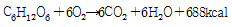

식품산업기사(구) (2006-03-05 기출문제)
1과목: 식품위생학
1. 생물체에서 정상적으로 생성·분비되는 물질이 아니라, 인간의 산업활동을 통해서 생성·방출된 화학물질로, 생물체에 흡수되면 내분비계의 정상적인 기능을 방해하거나 혼란케 하는 화학물질을 의미하는 것은?
- 환경오염물질
- 방사선오염물질
- 환경독소
- 환경호르몬
(정답률: 알수없음)

2. 포토상구균 식중독을 일으키는 원인물질은?
- 프토마인(ptomaine)
- 엔테로톡신(enterotoxin)
- 에르고톡신(ergotoxin)
- 테트로도톡신(tetrodotoxin)
(정답률: 알수없음)
3. 식품오염에 문제되는 방사능 핵종이 아닌 것은?
- Sr-90
- Cs-137
- I-131
- C-12
(정답률: 알수없음)
4. 산화방지제에 대한 설명으로 잘못된 것은?
- 에리소르브산(erythorbic acid), 몰식자산 프로필(propyl gallate) 등이 이들 종류에 속한다.
- 수용성인 것은 주로 색소 산화방지제로, 지용성인 것은 유지류의 산화방지제로 사용된다.
- 구연산, 사과산 등의 유기산류와 병용하면 효력이 더욱 증가된다.
- 수분, 금속, 열, 광선, 효소 등은 유지류의 산화를 방지하는 주된 요인이다.
(정답률: 알수없음)
5. 다음 식중독을 일으키는 세균 중 잠복기가 가장 짧은 균주는?
- Salmonella enteritidis
- Staphylococcus aureus
- Escherichia coli0-157
- Clostridium botulinum
(정답률: 알수없음)
6. 도자기 또는 항아리 등에 사용되는 유약에서 특히 문제가 되는 유해금속은?
- 철
- 구리
- 납
- 주석
(정답률: 알수없음)
7. 어패류의 생식으로 인한 식중독과 가장 관계 깊은 균은?
- 포도상구균
- 장염 비브리오균
- 살모넬라균
- 아리조나균
(정답률: 알수없음)
8. 방사능물질에 의한 식품의 오염에 관한 설명 중 잘못된 것은?
- 식품을 포함한 우리들 주변환경에 존재하는 모든 물질들은 미량의 방사능을 가지고 있다.
- 방사선조사식품의 경우 방사능이 오염, 잔류할 수 있는 경우가 있다.
- 핵 누출사고 등에서 발생하는 방사능물질에 오염된 경우이다.
- 축산물 등에서 문제되는 것은 131I이다.
(정답률: 알수없음)
9. 수질오염의 지표가 되며 식품위생검사와 가장 밀접한 관계가 있는 균은?
- 대장균
- 젖산균
- 초산균
- 발효균
(정답률: 알수없음)
10. 식품첨가물로 고시하기 위한 검토사항이 아닌 것은?
- 생리활성 기능이 확실한 것
- 화학명과 제조방법이 확실한 것
- 식품에 사용할 때 충분히 효과가 있는 것
- 통례의 사용방법에 의할 때 인체에 대한 안전성이 확보되는 것
(정답률: 알수없음)
11. 식육가공에서 품질개량제로 인산염을 이용하는 주된 이유는?
- 살균효과
- 발효촉진
- 보수성·결착성 증대
- 표백효과
(정답률: 알수없음)
12. 식품용기 재료 중 포르말린(formalin)의 용출이 심하여 식품위생상 문제가 큰 것은?
- 석탄산 수지
- 페놀 수지
- 요소 수지
- 폴리에스터 수지
(정답률: 알수없음)
13. 독소형 식중독을 일으키는 균종인 것은?
- Clostridium botulinum
- Clostridium perfringens
- Streptococcus faecalis
- Salmonella typhi
(정답률: 알수없음)
14. 사모넬라 식중독에 대한 설명으로 틀린 것은?
- 60℃에서 20분 정도이면 사멸된다.
- 감염형 식중독이다.
- 발열, 복통, 설사 증상을 일으킨다.
- 동물에 기생성이 없다.
(정답률: 알수없음)
15. 다음 식품과 독소의 관계가 서로 관련이 없는 것끼리 연결된 것은?
- 무스카린(muscarine) - 버섯
- 솔라닌(solanine) - 감자
- 아미그달린(amygdalin) -피마자
- 고시폴(gossypol) - 목화씨
(정답률: 알수없음)
16. 장염 비브리오균과 관계가 없는 것은?
- 호염성균이다.
- 아포가 없는 간균이다.
- 극단모성 편모가 있다.
- 그램양성이다.
(정답률: 알수없음)
17. 간흡충의 제2중간 숙주인 것은?
- 가재
- 게
- 붕어
- 왜우렁이
(정답률: 알수없음)
18. 와일드만 플라스크(Wildman trap flask)법은 주로 어떤 검사에 이요되는가?
- 이물 검사
- 식품 첨가물 검사
- 유해성 중금속 검사
- 용기 및 포장의 검사
(정답률: 알수없음)
19. 피부를 통하여 침입하는 기생충증은?
- 회충증
- 구충증
- 요충증
- 조충증
(정답률: 알수없음)
20. 바이러스에 의한 경구 전염병이 아닌 것은?
- 폴리오
- 전염성 설사
- 콜레라
- 유행성 간염
(정답률: 알수없음)
2과목: 식품화학
21. 다음의 식품 중 소성체의 특성을 나타내는 것은 어느 것인가?
- 가당연유
- 생크림
- 물엿
- 난백
(정답률: 알수없음)
22. 인체에서 전분질은 소화되어 어떤 상태로 흡수되는가?
- 갈락토오스(galactose)
- 글루코오스(glucose)
- 설탕(sucrose)
- 맥아당(maltose)
(정답률: 알수없음)
23. Polyoxyethylene sorbitan oleate(HLB=15)와 Sorbitan oleate(HLB=4.3)을 혼합하여 HLB가 12인 유화제 혼합물을 만들려고 한다. 각각 얼마씩 첨가하여야 하는가?
- Polyoxyethylene sorbitan oleate 62%, Sorbitan oleate 38%
- Polyoxyethylene sorbitan oleate 72%, Sorbitan oleate 28%
- Polyoxyethylene sorbitan oleate 80%, Sorbitan oleate 20%
- Polyoxyethylene sorbitan oleate 92%, Sorbitan oleate 8%
(정답률: 알수없음)
24. 밀, 쌀등 곡류 단백질의 제한 아미노산은?
- 시스테인(cysteine)
- 메티오닌(methionine)
- 트립토판(trytophan)
- 라이신(lysine)
(정답률: 알수없음)
25. 쇠고기의 붉은 색깔은 무슨 색소에 의하여 나타나는가?
- 안토시안(anthocyan)
- 카로틴(carotene)
- 미오글로빈(myoglobin)
- 플라본(flavone)
(정답률: 알수없음)
26. 유황을 가지고 잇는 아미노산은 어느 것인가?
- 라이신(lysine)
- 메티오닌(methionine)
- 트립토판(tryptophan)
- 히스티딘(histidine)
(정답률: 알수없음)
27. 안토시아닌(anthocyanin)계 색소가 산성에서 띄는 색깔은?
- 무색(無色)
- 적색(赤色)
- 청색(靑色)
- 자색(紫色)
(정답률: 알수없음)
28. 클로로필(chlorophyll)색소는 산과 반응하게 되면 어떻게 변하는가?
- 갈색의 pheophytin을 생성한다.
- 청녹색의 chlorophyllide를 생성한다.
- 청녹색의 chlorophylline을 생성한다.
- 갈색의 phytol을 생성한다.
(정답률: 알수없음)
29. 다음 비타민 중 당질 대사와 밀접한 관계가 있는 것은?
- 비타민 A
- 비타민 B1
- 비타민 C
- 비타민 P
(정답률: 알수없음)
30. 파인애플, 죽순, 포도 등에 함유되어 있는 주요 유기산은 어느 것인가?
- 초산(acetic acid)
- 구연산(citric acid)
- 주석산(tartaric acid)
- 호박산(succinic acid)
(정답률: 알수없음)
31. 다음 설명 중 옳지 않은 것은?
- 과일향의 주성분은 에스테르(ester)류이다.
- 생선의 비린내 성분은 세균의 산화작용에 의해 생성된 황화수소 성분이다.
- 식ᄈᆞᆼ의 향기성분은 발효와 굽기 과정에서 생성된 성분이다.
- 땅콩과 참깨의 고소한 향기는 아미노카르보닐 반응에 의한 것이다.
(정답률: 알수없음)
32. 변성단백질의 성질을 설명한 내용 중 틀린 것은?
- 천연 단백질이 변성되면 본래 갖고 있던 효소활성이나 독성은 상실되지만 면역성은 유지된다.
- 단백질이 열에 의해 변성되면 구상을 이루고 있던 폴리펩타이드(polypeptide) 사슬이 열에 의하여 풀어져서 일반적으로 소화가 잘 된다.
- 변성단백질은 –OH기, -SH기, -COOH기, -NH2기 등과 같은 활성기가 표면에 나타나 반응성이 증가한다.
- 단백질이 변성되면 친수성이 감소하고 따라서 용해도가 감소하게 된다.
(정답률: 알수없음)
33. 지용성 비타민의 운반체는?
- 당질
- 지질
- 단백질
- 무기질
(정답률: 알수없음)
34. 폴리펩타이드(polypeptide)의 측쇄(side chain)사이의 결합율 cross linkage라고 하는데 이에 해당하지 않는 결합은?
- 이온결합
- 배위결합
- 수소결합
- -S-S-결합
(정답률: 알수없음)
35. 수분활성도(Aw)에 대한 설명으로 옳은 것은?
- 식품이 나타내는 수증기압을 그 온도에서 순수한 물의 최대 수증기압으로 나눈 것이다.
- 순수한 물의 수증기압을 그 온도에서 식품이 나타내는 수증기압으로 나눈 것이다.
- 식품속에 수분함량을 %함량으로 표시한 것이다.
- 미생물이 활발히 번식할 수 있는 수분함량을 표시한 것이다.
(정답률: 알수없음)
36. 식용유지의 품질을 평가하는데 가장 중요한 사항은?
- glyceride의 양
- 유리지방산 함량
- lipase 함량
- 색소
(정답률: 알수없음)
37. 튀김유를 과도하게 반복 사용하였을 경우 나타나는 물리·화학적 성질의 변화 중 틀린 것은?
- 굴절율이 감소한다.
- 발연점이 감소한다.
- 요오드가가 감소한다.
- 산가가 증가한다.
(정답률: 알수없음)
38. 갈락토오스와 포토당으로 결합된 이당류는?
- 맥아당
- 유당
- 설탕
- 전분
(정답률: 알수없음)
39. 무기질의 기능이 아닌 것은?
- 뼈와 치아 등의 경조직을 구성한다.
- 체액의 pH 및 삼투압을 조절한다.
- 신경의 흥분과 전달에 관여한다.
- 체내 에너지원으로 작용한다.
(정답률: 알수없음)
40. 지방질의 자동산화(autoxidation)를 일으키는 주 요인은?
- 효소
- 산소
- 고시폴
- 비타민 C
(정답률: 알수없음)
3과목: 식품가공학
41. 다음 발효유 중 알콜발효유는 어느 것인가?
- Yoghurt
- Acidophilus milk
- Calpis
- Kumiss
(정답률: 알수없음)
42. 레토르트 파우치(Retort pouch)의 적성으로 틀린 것은?
- 고온에 견딜 수 있어야 한다.
- 파열강도가 낮아야 한다.
- 접착성이 좋아야 한다.
- 가스 투과성이 낮아야 한다.
(정답률: 알수없음)
43. 쇼트닝(shortening) 유지의 설명으로 맞는 것은?
- 수분과 부원료 없이 정제유지, 경화유 또는 이들의 혼합물에 10~20%의 질소가스, 탄산가스 또는 공기를 갖게 하고 급랭하여 만들며, 제과, 제빵에 많이 사용된다.
- 유지를 물 또는 우유, 소금, 색소, 향로, 비타민 A, D등의 다른 성분의 물질과 혼합하여 만들며, 제과, 제빵에 많이 사용된다.
- 잘 정제된 지방이나 수소첨가 지방에 물을 가하여 교반 혼합하여 유탁상태로 만든 후 고화시켜 제조한다. 제과, 제빵에 많이 사용된다.
- 유지 함량이 최소한도 80%는 되어야 하고 수분이 15%정도 함유된다. 인조 버터라고도 하며 구미에서는 제과, 제빵에 많이 사용된다.
(정답률: 알수없음)
44. 산당화법에서 사용되는 전분 분해제 중 사용 후 중화했을 때 생성되는 입자가 크고 용해도는 작은 특징을 가진 것은?
- 수산
- 염산
- 황산
- 초산
(정답률: 알수없음)
45. 햄 제조에서 질산칼륨을 넣는 주된 이유는?
- 고기를 연화시키기 위해
- 육의 빛깔을 좋게 하기 위해
- 살균의 효과를 높이기 위해
- 간액이 잘 스며들게 하기 위해
(정답률: 알수없음)
46. 식품의 건조방법 중에서 대류에 의한 건조는?
- 접촉건조
- 열풍건조
- 복사건조
- 동결건조
(정답률: 알수없음)
47. 인스턴트 커피(Instant coffee) 제조시 커피의 향기가 형성되는 공정은?
- 볶음
- 분쇄
- 추출
- 건조
(정답률: 알수없음)
48. 분유의 용해성을 향상시키기 위한 공정의 순서로 맞는 것은?
- 단립화 → 재건조 → 냉각 → 정립
- 재건조 → 냉각 → 단립화 → 정립
- 정립 → 단립화 → 재건조 → 냉각
- 정립 → 냉각 → 단립화 → 재건조
(정답률: 알수없음)
49. 마요네즈 제조시 유화제로 작용하는 성분은?
- 알부민(albumin)
- 스테롤(sterol)
- 레시틴(lecithin)
- 라이소자임(lysozyme)
(정답률: 알수없음)
50. 잼 제조시 젤리점(jelly point)을 결정할 때 여러 가지 방법을 조합하여 결정한다. 다음 중 젤리점을 결정하는 방법이 아닌 것은?
- 스푼 테스트
- 컵 테스트
- 당도계에 의한 당도 측정
- 온도 테스트
(정답률: 알수없음)
51. 밀감에 들어 있는 총산의 양은 얼마인가? (밀감을 착즙하여 10mℓ를 시료로 사용하여 지시약을 넣고, 선홍색의 종점까지 0.1N NaOH로 3회 적정한 평균값이 30mℓ이었다. 단, 0.1N NaOH factor=1.0000, 0.1N NaOH 1mℓ에 상당하는 구연산 환산계수 0.0064)
- 1.25%
- 1.72%
- 1.85%
- 1.92%
(정답률: 알수없음)
52. 샐러드 기름을 제조할 때 탈납(winterization)과정을 거친다. 탈납의 목적은?
- 불포화 지방산을 제거한다.
- 저온에서 고체상태로 존재하는 지방을 제거한다.
- 지방 추출원료의 찌꺼기를 제거한다.
- 수분을 제거한다.
(정답률: 알수없음)
53. 통조림의 탈기 목적 중 관계가 없는 것은?
- 가열살균 중 관의 파손을 방지한다.
- 통조림 저장 중 관내면 부식을 방지한다.
- 내용물의 색택, 향미의 변화를 방지한다.
- 통조림 저장 중 세균침입을 방지한다.
(정답률: 알수없음)
54. 통조림을 살균할 때 냉점(冷点)이 관 내부의 중심에 있는 것은?
- 사과잼
- 과실넥타
- 복숭아 통조림
- 쇠고기 스프 통조림
(정답률: 알수없음)
55. 현미의 도정율을 증가시킴에 따른 변화 중 틀린 것은?
- 단백질의 손실이 커진다.
- 탄수화물량이 증가된다.
- 총 열량이 증가된다.
- 소화율이 낮아진다.
(정답률: 알수없음)
56. 두부에 관한 설명 중 틀린 것은?
- 물에 침지하면 부피가 원료콩의 2.3-2.5배 정도가 된다.
- 응고제는 MaCl2, CuSO4, NaCl등으로 이용된다.
- 응고작용은 두유의 단백질인 glycinin이 음전하를 띄므로 원자가가 높은 양이온의 Ca, Mg등의 작용으로 응고된다.
- 응고제 첨가는 60-70℃에서 2-3회 나누어 첨가한다.
(정답률: 알수없음)
57. 쌀의 도정도 판정에 이용되는 시약은?
- May Grunwald
- Guaiacol
- H2O2
- Lugol
(정답률: 알수없음)
58. D.E(Dextrose Equivalent)에 대한 설명 중 옳은 것은?
- 단백질의 기수분해도를 나타낼 때 사용한다.
- 전분의 기수분해도를 나타내며 비환원담량으로 표시된다.
- D.E가 높을수록 감미도와 평균분자량이 높아진다.
- 포도당 당량으로 표시되며 D.E가 높을수록 감미도가 높다.
(정답률: 알수없음)
59. 아이스크림 제조공정의 설명 중 가장 부적당한 것은?
- 균질 후에 믹스를 0~5℃에서 일시적(몇 시간 동안)으로 보존하는 공정인 숙성(aging)은 지방의 고화, 안정제의 젤화, 믹스의 점성 증가로 조직이 부드럽고, 거품성이 좋아지는 효과가 있다.
- 동결(freezing)은 아이스크림의 모양을 만들기 위한 최종단계이다.
- 소프트 아이스크림(soft ice cream)은 –7℃에서 중용을 (over-run)을 30~50%로 반경화시켜 만든 것으로 반유동체 형태이다.
- 아이스크림의 경화(hardening)란 반유동체의 아이스크림을 –20℃ 정도에서 급속히 냉각시켜 일정한 형태를 유지하기까지 동결시키는 공정이다.
(정답률: 알수없음)
60. 과일을 파쇄하여 만든 것으로 과즙중에 과육조각이 있는 것은?
- 천연과일쥬스(natural fruit juice)
- 스쿼시(squash)
- 시럽(syrup)
- 넥타(nectar)
(정답률: 알수없음)
4과목: 식품미생물학
61. 진핵세포와 원핵세포에 관한 설명 중 틀린 것은?
- 원핵세포는 하둥미생물로서 여기에는 세균, 방선균이 속한다.
- 원핵세포에는 핵막, 인, 미토콘드리아가 없다.
- 진핵세포의 염색체 수는 1개이다.
- 진핵세포에는 핵막이 있다.
(정답률: 알수없음)
62. 식물 병원균이면서 야채류 연부병(soft rots)의 원인이 되는 균은?
- Erwinia속
- Pseudomonas속
- Flavobacterium속
- Vibrio속
(정답률: 알수없음)
63. 균사의 끝에 중축이 생기고 여기에 포자낭을 형성, 포자낭포자를 내생하는 곰팡이는?
- Aspergilius속
- Neurospora속
- Absidia속
- Penicillium속
(정답률: 알수없음)
64. 잔균류(Eumycetes)의 세포내 구조물 중 염색체(chromosome)를 함유하며 유전에 관계되는 것은?
- 리보소옴
- 원형질막
- 핵
- 미토콘드리아
(정답률: 알수없음)
65. 포도주 제조 공정 중 앙금에서 떠내기(racking)를 하는 주 목적은?
- 주정을 더 많이 생성시키기 위하여
- 저장성을 높이기 위하여
- 산을 제거하고 효모를 왕성하게 발육시키기 위하여
- 침전물을 제거하고 늙은 효모의 냄새를 방지하기 위하여
(정답률: 알수없음)
66. 세균에 감염·기생하여 증식하면서 용균시키는 바이러스로서 광학현미경으로 관찰이 불가능한 미생물은?
- Actinomycetes
- Schizomycetes
- Ascomycetes
- Bacteriophage
(정답률: 알수없음)
67. 세균의 그램(Gram) 염색에 사용되지 않는 것은?
- Crystal violet 액
- Lugol 액
- Safranin 액
- Congo red 액
(정답률: 알수없음)
68. 클로렐라(Chlorella)에 대한 설명으로 옳지 않은 것은?
- 단세포 녹조류이다.
- 고등원생생물로서 균주에는 Chlorella ellipsoidea가 있다.
- 산소를 이용하고 CO2를 방출한다.
- 단백질 등 영양소가 많다.
(정답률: 알수없음)
69. Bacillus subtilis의 성질이 아닌 것은?
- 점질물을 생산한다.
- 삶은 콩에 잘 번식한다.
- 비포자 형성균이다.
- amylase와 protease를 생산하는 균이다.
(정답률: 알수없음)
70. 다음 통조림 중에서 가열살균 조건을 가장 완화(낮은 열처리)시켜도 되는 것은?
- 과일 통조림
- 어육 통조림
- 육류 통조림
- 채소류 통조림
(정답률: 알수없음)
71. 포도주 발효에 관여하는 효모는?
- Saccharomyces cerevisiae
- Saccharomyces carlsbergensis
- Saccharomyces formosensis
- Saccharomyces ellipsoideus
(정답률: 알수없음)
72. 다음 식 중 이상발효 젖산균과 관계있는 것은?
- C6H12O6 → 2C2H5OH + 2CO2
- C6H12O6 → 2CH3·CHOH·COOH
- C6H12O6 → CH3·CHOH·COOH+C2H5OH+CO2
- C6H12O6 → C3H5(OH)3+CH3CHO+CO2
(정답률: 알수없음)
73. 맥주 제조용 맥아를 만드는 공정이 바르게 된 것은?
- 보리의 정선 → 침맥 → 발아 → 배조
- 보리의 정선 → 발아 → 침맥 → 배조
- 침맥 → 발아 → 배조 → 보리의 정선
- 침맥 → 발아 → 보리의 정선 → 배조
(정답률: 알수없음)
74. 세균의 편모(flagella)와 관련이 있는 것은?
- 생식기관
- 운동기관
- 영양축적기관
- 단백질합성기관
(정답률: 알수없음)
75. 다음 반응과 관계 깊은 것은?

- 발효작용
- 호흡작용
- 증식작용
- 증산작용
(정답률: 알수없음)
76. 효모에 의한 발효성 당의 탄산가스를 계측할 수 있는 기구는?
- Durham tube
- Einhorn tube
- Spectrophotometer
- Mass flask
(정답률: 알수없음)
77. 내삼투압성이 높아 잼(jam)과 같은 당농도가 높은 곳에서 번식하여 이를 변패시기는 미생물은?
- Candida utilis
- Bacillus subtilis
- Acetobacter aceti
- Saccharomyces rouxii
(정답률: 알수없음)
78. 일반적인 균체내 효소추출 방법으로 부적당한 것은?
- 초음파파쇄법
- 자기소화법
- 동결융해법
- 열추출법
(정답률: 알수없음)
79. Amylo법의 알콜발효에 이용되는 곰팡이 중 중국의 누룩에서 분리한 균으로 당화효소(glucoamylase) 제조에 이용되기도 하는 것은?
- Rhizopus tonkinensis
- Rhizopus japonicus
- Rhizopus javanicus
- Rhizopus delemar
(정답률: 알수없음)
80. 다음 중 정상발효 젖산균이 아닌 것은?
- Streptococcus lactis
- Streptococcus cremoris
- Lactobacillus acidophilus
- Lactobacillus brevis
(정답률: 알수없음)